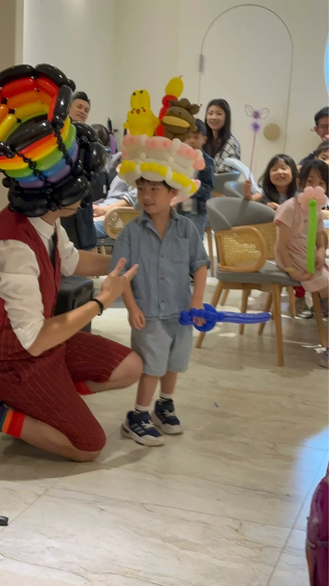
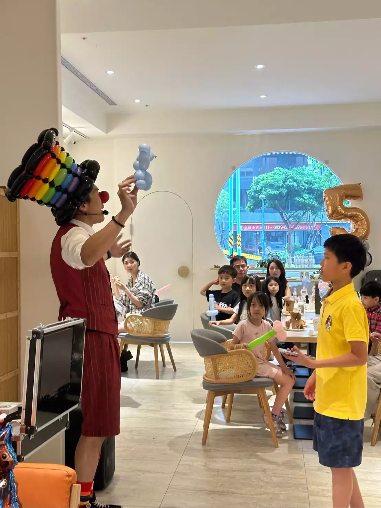

氣球大叔 Sony × 桃園小矮人親子空間｜親子互動魔術秀紀錄
桃園市親子活動亮點 × 創意氣球演出｜在專業親子空間點亮家庭歡笑時刻
📍 地點：桃園市桃園區 小矮人親子空間
桃園親子活動首選：小矮人親子空間的快樂魔法
在桃園市桃園區極具人氣的 「小矮人親子空間」，氣球大叔 Sony 受邀為當天的家庭活動帶來核心演出。不同於一般的靜態活動，Sony 結合了 巧妙的氣球魔術 與 高度幽默的台詞互動，將原本溫馨的親子空間轉化為笑聲不斷的魔幻劇場，成功吸引了在場所有孩子與家長的目光。

親子共創體驗：不只是表演，更是回憶
演出過程中，Sony 特別強調「共同參與」。從邀請小朋友擔任魔術助手，到為每位小貴賓手折專屬氣球作品（如小兔子、小熊或戰鬥寶劍），每一環節都經過精心設計。這種沉浸式的互動方式，不僅讓孩子在遊戲中學習，更讓家長們紛紛拿起手機，捕捉孩子最純粹的笑容與成就感。
- 🎈 客製造型： 快速折出受歡迎的卡通角色，作品質感深受家長讚許。
- 🤝 暖心互動： 專業表演者能迅速消除孩子在公共場域的緊張，營造親和氣氛。
- 📸 打卡熱點： 繽紛的氣球作品與親子空間的主題佈置完美結合，照片張張精彩。

「孩子回家後還在分享當天的魔術！謝謝氣球大叔 Sony，讓桃園的親子午后變得這麼有溫度且富有層次感。」
結語：為您的親子活動注入超強集客力
氣球大叔 Sony 具備豐富的 桃園、中壢、平鎮 地區親子空間、托嬰中心與幼兒園演出經驗。無論是 週歲派對、慶生演出 或是 品牌親子日，我們都能透過高張力的互動表演，為您的場域創造口碑與人氣。想為您的場地預約亮點？歡迎隨時聯繫。
🔥 更多桃園在地親子活動精彩案例：
- 👉 官方大型活動：桃園新住民家庭日｜多元文化主題氣球魔術秀紀實
- 👉 校園品牌餐敘：龍潭康橋幼兒園餐敘｜氣球迎賓與魔術互動秀亮點
- 👉 大廠親子盛事：2025 巴斯夫 BASF 親子日｜新竹綠世界草地氣球互動演出
- 👉 桃園綠能節慶：桃園綠色生活悠遊節｜蜜蜂氣球人 × 綠能互動表演
💡 關於桃園親子慶生與表演的常見問題
- Q: 在桃園親子空間或親子餐廳舉辦慶生活動，氣球表演的內容可以調整嗎？
- A: 沒問題！氣球大叔 Sony 的表演內容極具靈活性。針對桃園親子空間（如小矮人親子空間）的活動，我們會根據壽星的喜好、賓客的年齡層以及現場的空間大小，量身打造最適合的氣球魔術互動。無論是想要酷炫的英雄主題，還是夢幻的童話風格，我們都能透過高質感的氣球藝術完美呈現。
- Q: 親子空間的活動時間通常比較緊湊，氣球秀與手折氣球服務的時間要如何分配？
- A: 為了確保慶生會節奏流暢，我們建議採取「30分鐘舞台互動魔術秀 + 30-60分鐘定點氣球手折」的配置。前半段透過精彩魔術凝聚所有家庭的注意力，營造全場歡樂氛圍；後半段則由大叔定點製作客製化造型氣球作為伴手禮，讓每個孩子都能帶著驚喜回家，是桃園家長回饋滿意度最高的流程安排。
- Q: 除了表演，氣球大叔也可以協助親子空間進行慶生背板或場地佈置嗎？
- A: 當然可以！氣球大叔 Sony 提供一站式的生日派對解決方案。我們擅長利用不規則氣球鏈、主題背板以及大師級的氣球藝術作品，將親子空間轉化為最具美感的打卡盛地。透過表演與佈置的完美結合，我們能為您的家庭盛事打造全方位的視覺與感官體驗，讓每張紀念照片都像專業雜誌封面。
🎈 正在尋找桃園親子慶生與表演嗎？
如果您也希望為您的活動創造像現場一樣爆棚的人氣與驚喜，氣球大叔 Sony 是您的首選！我們專注於提供高品質的互動演出與情境佈置：
- 親子場域引流：親子空間快閃、親子餐廳週年慶、托嬰中心校慶演出。
- 生日主題派對：一站式氣球佈置、客製化造型氣球、驚喜互動魔術秀。
- 商業品牌聯名：建案親子活動、百貨假日聚客、企業家庭日親子互動。
📅 本文整理於 2025 年 05 月 25 日，完整紀錄真實活動現場氛圍。